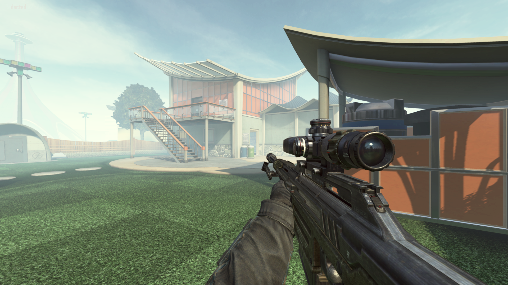
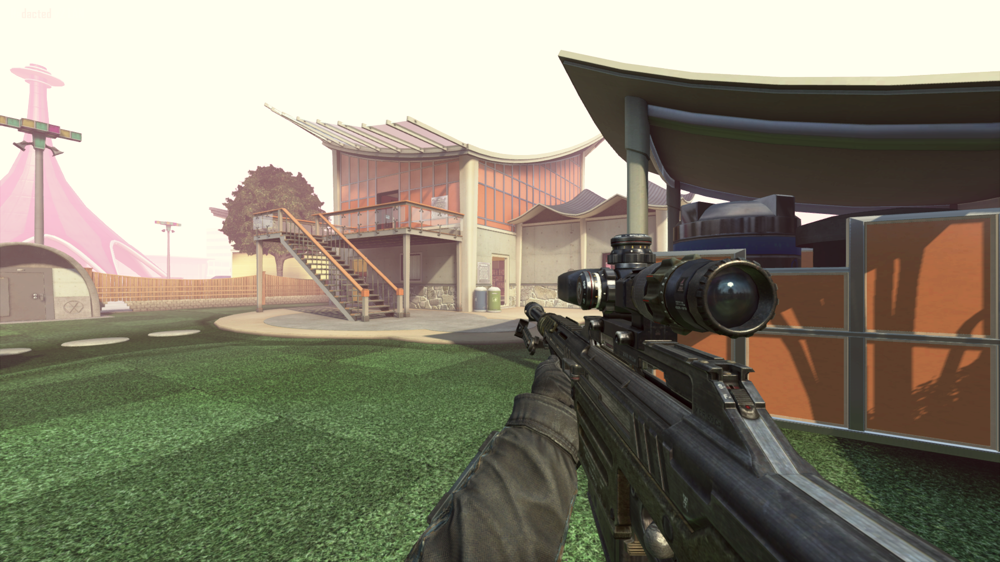
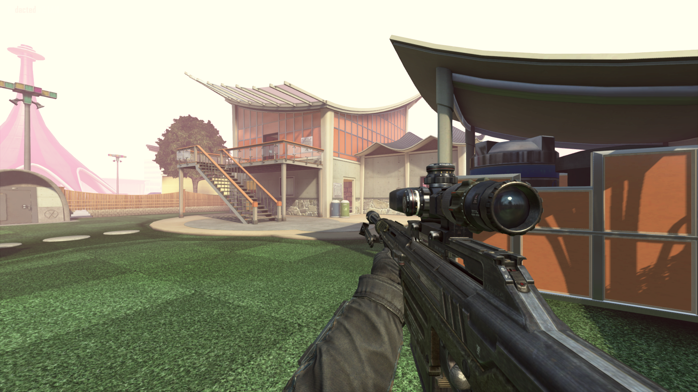
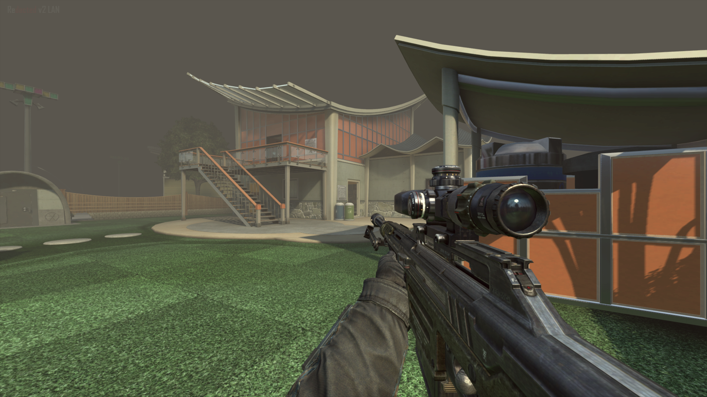
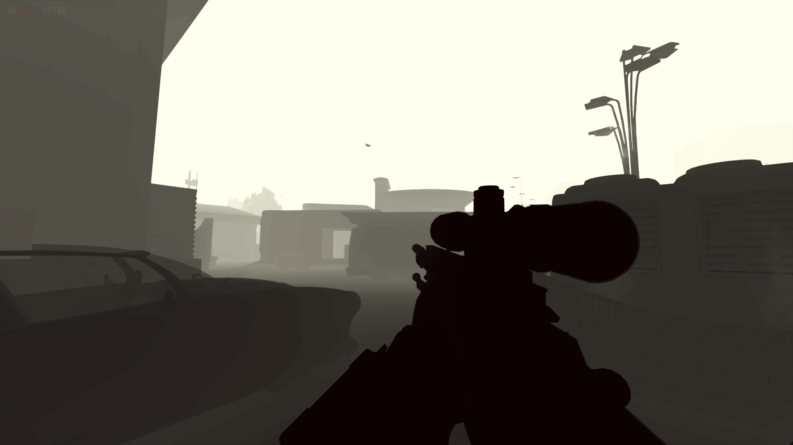
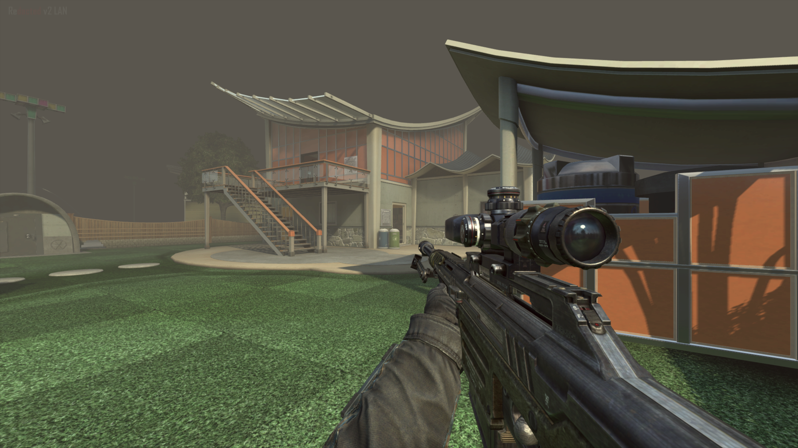
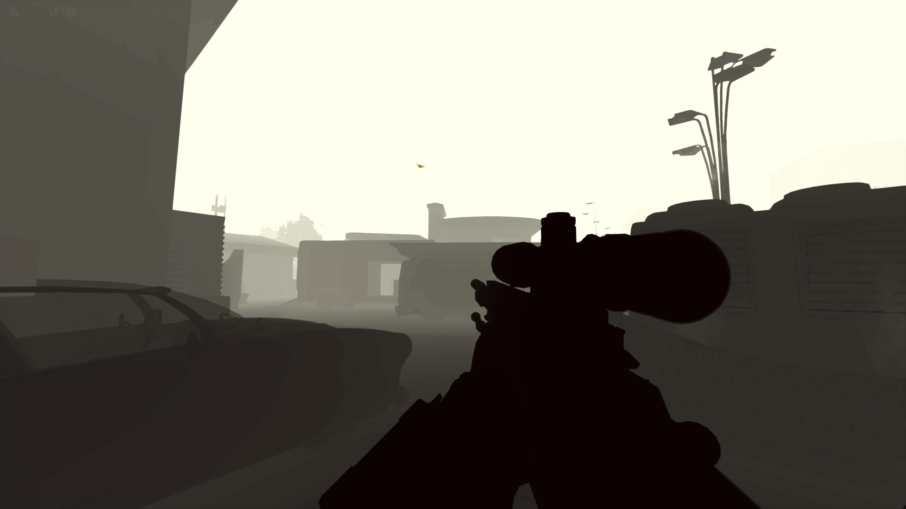

BO2/Redacted Fog mod
This mod requires Cheat Engine
 Using the fog mod, you can customise the ingame Bo2 dof using a simple Cheat Engine table.
This includes Start distance, Fade distance, Height, Bias, Color and Exposure.
Usage:
Open the Table using Cheat Engine, if you have CE installed simply double click the .CT file.
Hook it to the process (press the button below the 'file' menu).
The Table includes 8 Numeric keybinds, each has its own 'fog preset'
Using the fog mod, you can customise the ingame Bo2 dof using a simple Cheat Engine table.
This includes Start distance, Fade distance, Height, Bias, Color and Exposure.
Usage:
Open the Table using Cheat Engine, if you have CE installed simply double click the .CT file.
Hook it to the process (press the button below the 'file' menu).
The Table includes 8 Numeric keybinds, each has its own 'fog preset'
Presets:
  
NUM1 NUM2 NUM3 NUM4
Foggy Day Aqua Pitch black Denpa

NUM1 NUM2 NUM3 NUM4
Foggy Day Aqua Pitch black Denpa
  
NUM5 NUM6 NUM7 NUM8
Forest fire Smog Depth map Resets fog
 
NUM5 NUM6 NUM7 NUM8
Forest fire Smog Depth map Resets fog
Making a depth matte using the fog mod
*requires a working bo2 console (check: BO2/Redacted Resources page).
Open the z_fog.CT file using cheat engine and hook it to the bo2 process
Press NUM7 to set the depth fog. Then move on to your preferred console and execute this config.
To disable the depthmatte, press NUM8 and execute this config
you might have to press the play or play back button ingame in order to reset the fog
Footer note: the fog mod was originally founded by Gmzorz and Azsry
the depth config/settings was made/found by Digital Citizen


{kind=link}
{kind=link}
{kind=link}
{kind=link}